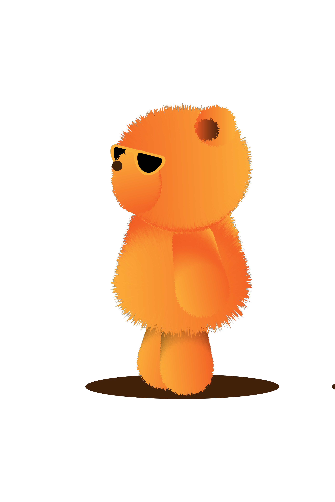
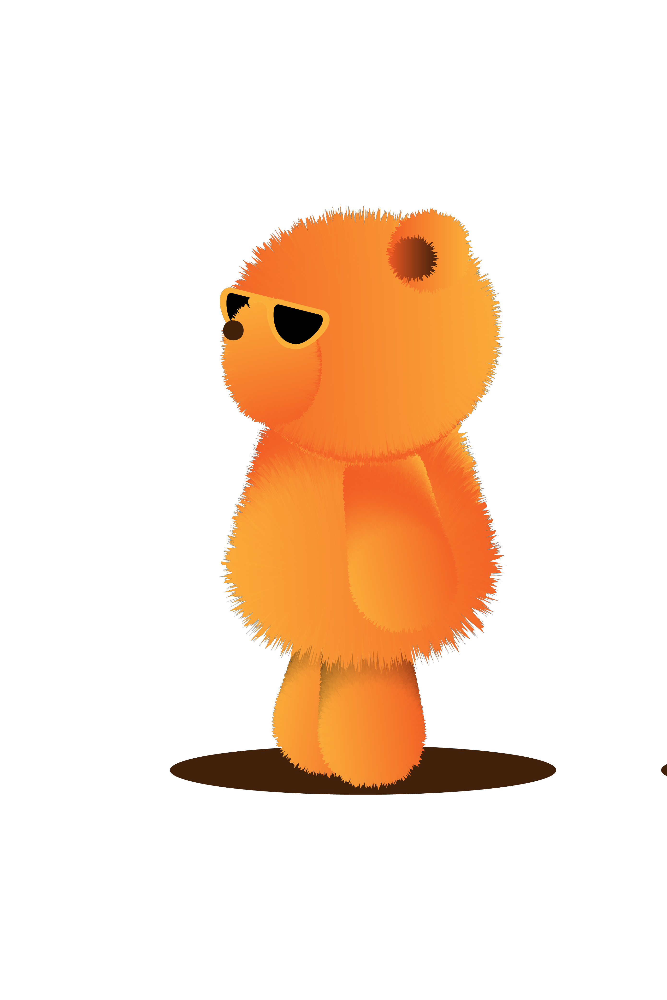
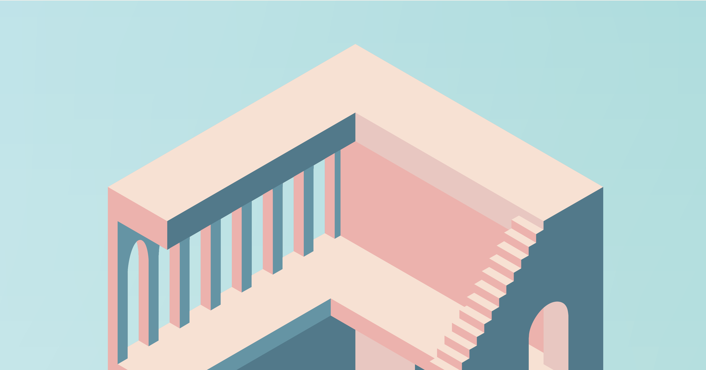
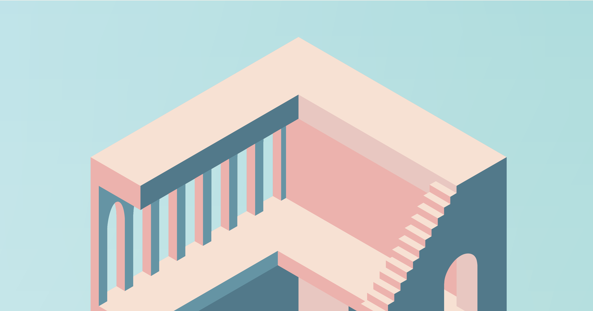
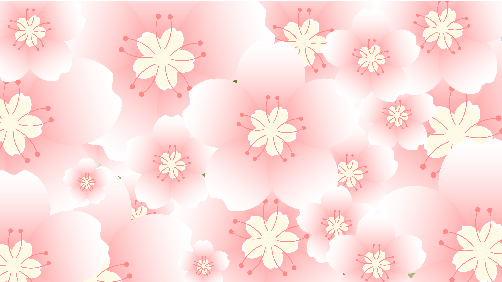
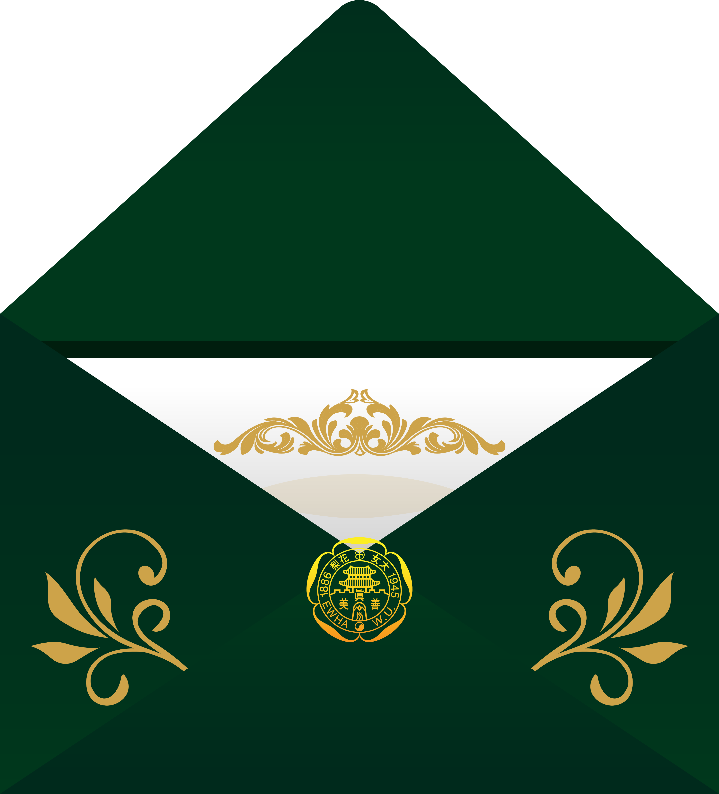
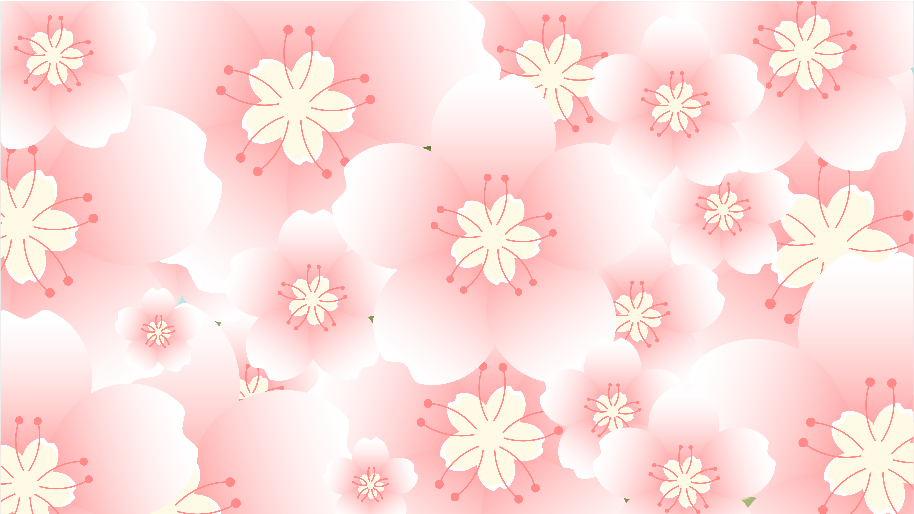
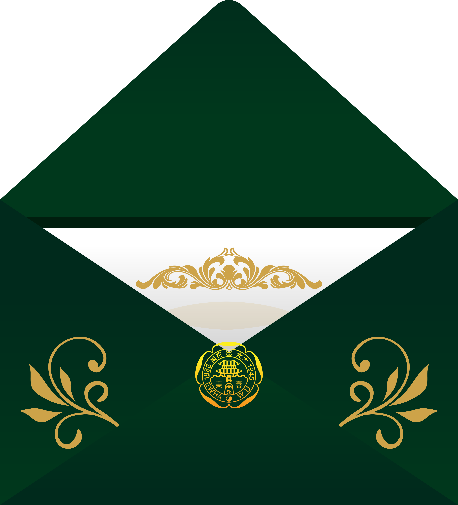

사장님이 이화로부터
받은 영향은?


<굿바이슈가베어>
“이 부분은 그때나 지금이나 동일하네요 ㅎㅎ
이화는 저에게 참 제 인생으로나 일으로나 큰 부분을 알려주었네요.
이 부분이 시간이 지나다보니 건강하게 자리잡아,
자기존중이 중요한만큼 타인도 자기 자신이
중요하다는 것을 느꼈고 자기 존중을 넘어 타인을 존중하는 것까지 현재는 제가 성장하였어요.”
<이세계는놀이터예요>
“학교에 들어와서 만난 친구들과 선생님의 영향이 교차되어 지금의 제가 되었어요.
그리고 지금의 제가 지향하는 삶이 만들어진 것도 이들의 영향이 컸습니다. 지향하는 삶에 더
가까이가는 길이 지금의 식당을 운영하는 것이 되기도 했네요.
이들을 만날 수 있었던 곳이 이화이고,
제가 보다 더 큰 사람이 될 수 있는 땅이 된 곳이 이화입니다.”
<주객전도>
“창업 이후 우연히 계절학기로 기업가정신연계전공 수업을 들었습니다.
수업을 통해
나의 창업과정을 되돌아보며 반성과 칭찬을 하는 기회를 가졌습니다. 여러모로 도움이 되는
수업이었습니다.”
(*기업가정신연계전공이란? 기업가정신, 창업에 대한 이해와 도전정신 등 창업에 필요한 역량을 기를 수 있는 인재 육성 프로그램이다. 창업에 관심 있는 학생에게 창업 강좌 수강 기회를 제공하는 교내 창업 플랫폼의 역할을 한다.)


 


 

 


